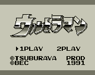
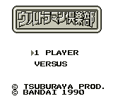
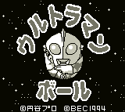
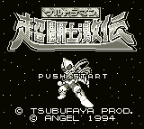

Ultraman (VGB)

This is a street fighter game. You control Ultraman as he battles various
monsters. The graphics are poor, and the game control just plain sucks. This
game is for collecting only, not playing.
Ultraman Action Club (VGB)

This is a war-strategy game with a unique battle system. The attacks and
defense of the characters are based on some sort of card system. Whoever has
the better cards will win the battle. Haven't figured out the game play yet.
Ultraman Ball (VGB)

This is a Mario-style, vertical scrolling game. Ultraman has the ability to
turn himself into a ball (hence the title). In this form, he can bounce to
high platforms and break bricks. It is a cute game but not outstanding.
Ultraman Gekiden (VGB)

This is a Mario-style, vertical scrolling action game. Ultraman attacks with
a standard punch, but he can also power-up and release a weapon by holding
down the punch button. You get a different weapon depending on how long you
hold down the punch button. The graphics are adequate, but there is nothing
outstanding about the game.
Return to Emulator Table of Contents
Last Modified 12 Sept 1996
Created 2 Sept 1996
Luis A. Cruz
cruzl@ccs.neu.edu